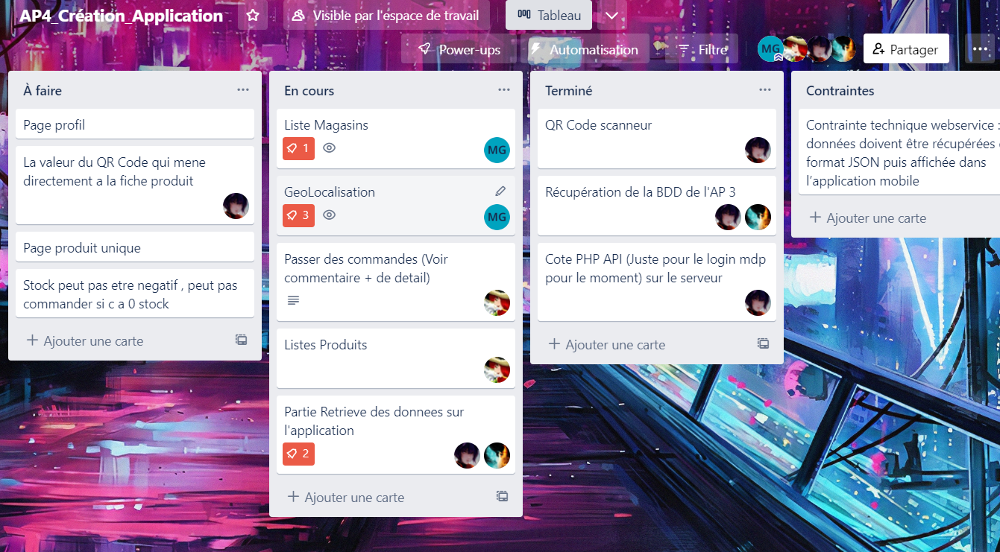
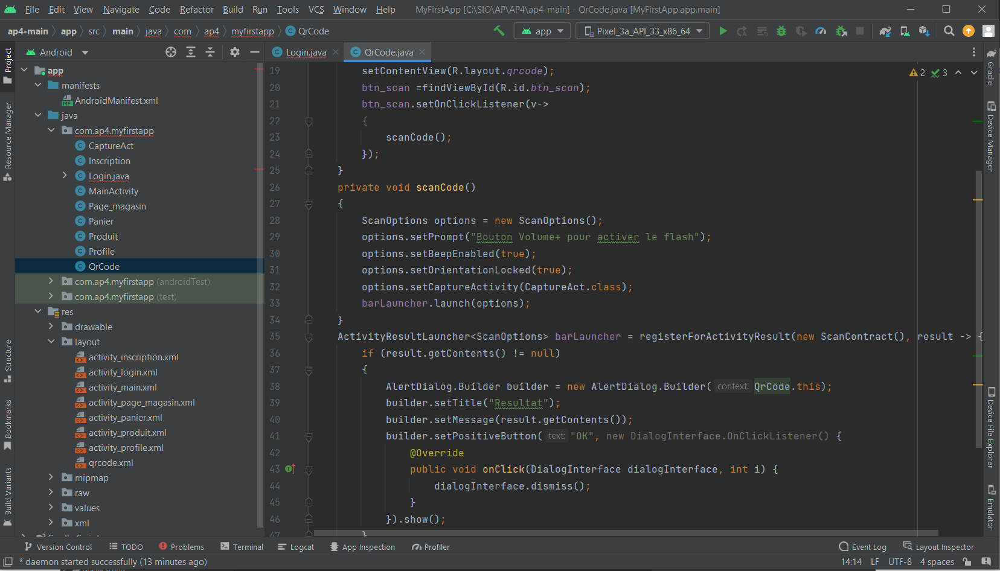

AP4: Conception d'une application web
Objectif
Aux côtés de trois autres camarades de projet, nous devons réaliser une application mobile via AndroidStudio. Cette application codée en Java doit permettre aux clients utilisant l'application de se connecter avec leur compte, de pouvoir scanner les QR codes des articles afin de voir apparaître leur description et également pouvoir utiliser la géolocalisation afin que l'application puisse faire apparaître le magasin ALL4SPORT le plus proche de l'utilisateur. Il nous faudra également réaliser un webservice à partir du code source de notre projet web AP3 afin de récupérer les informations envoyées par l’application mobile et mettre à jour la liste des commandes du magasin.
La répartition des tâches
Afin de rendre opérationnel un maximum de fonctionnalités sur l'application, nous avons établi un Trello afin de se répartir les différentes tâches. Ainsi nous gagnons du temps en attribuant à chacun sa mission en prenant compte de ce qu'il est demandé dans le cahier des charges.
Afin de sauvegarder les évolutions de notre projet, nous avons tenu un répertoire Github en commun afin de pouvoir apporter nos ajouts et modifications réalisés par chacun de son côté. Nous nous sommes tout de même coordonnés avant de réaliser nos ajouts car certaines parties étaient prioritaires pour le bon fonctionnement de l'application (par exemple ils nous étaient indispensable de d'abord attendre le membre chargé du webservice car, sans cela, rien ne peut fonctionner).
Voici notre Trello:
Nous avons utilisé un serveur Discord réservé à ce projet pour échanger et partager les informations:
Voici l'interface d'Android Studio:
Testing et déploiement
Pour mieux vérifier que chaque modification apportée à l'application fonctionne et ne génère pas d'erreur ou bug, nous avons eu recourt à des tests sur nos smartphones personnels. Ainsi nous avons pu installer l'application via nos ordinateurs et un câble d'alimentation. Ces tests par smartphones se sont révélés indispensable pour nous rendre compte de problèmes comme des crashs de l'application que nous avons dû corriger mais également des problèmes de compatibilités.
Voici l'émulation d'un smartphone affichant notre début d'application (excusez-moi je n'ai pas de captures plus récentes de l'application):